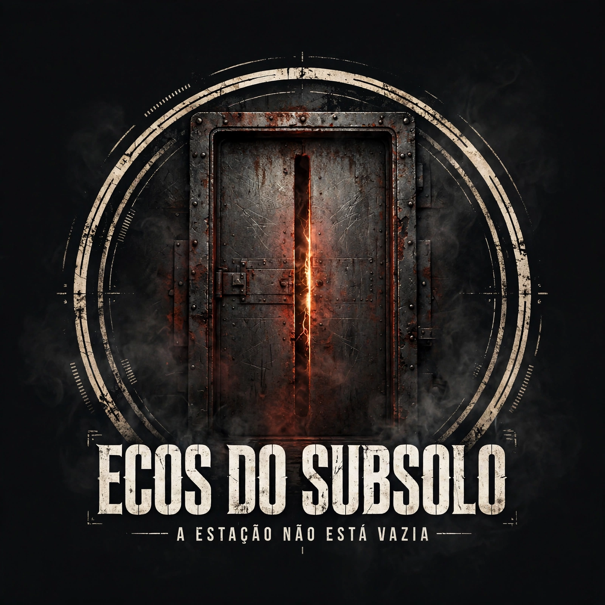

Você é Lia Nascimento, técnica de manutenção da Vértice Biológica. Um tremor fechou o Setor Subsolo e cortou a energia durante um teste de contenção.
Recupere seu crachá, religue o gerador auxiliar e abra a saída. Nos corredores, os infectados parecem reagir aos ruídos.
Computador: WASD + mouse · Celular: analógico esquerdo para andar · deslize à direita para olhar
Demo experimental · recargas ilimitadas para teste.